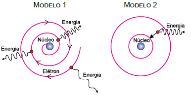

1. MODELO ATÔMICO DE DALTON: Dalton descrevia a matéria a partir de algumas hipóteses: tudo que existe na natureza é composto por diminutas partículas denominadas átomos; os átomos são indivisíveis e indestrutíveis, e existe um número pequeno de elementos químicos diferentes na natureza.
2. MODELO DE THOMSON: o átomo era uma esfera de eletricidade positiva, onde estavam submersas partículas negativas denominadas elétrons. Foi Thomson que lançou a ideia de que o átomo era um sistema descontínuo, portanto, divisível.
3. MODELO ATÔMICO DE RUTHERFORD: o átomo ocuparia um volume esférico e possuía um núcleo, o qual possuía a maior parte da massa do átomo, bem como teria uma carga positiva. A região externa ao núcleo estaria ocupada pelos elétrons em movimento em torno deste núcleo.
4. MODELO ATÔMICO DE BOHR: os elétrons giram em torno do núcleo de forma circular e com diferentes níveis de energia, chamados por Bohr de orbital atômico (OA). Nestes OA, os elétrons apresentariam energias constantes. Os elétrons saltam para orbitais de mais alta energia, retornando ao seu estado fundamental, após a devolução da energia recebida, emitindo um fóton de luz equivalente.
5. MODELO ATÔMICO “MODERNO”: O modelo atômico atual é um modelo matemático-probabilístico embasado, fundamentalmente, nos princípios da Incerteza de Heisenberg e no da Dualidade partícula-onda de Louis de Broglie. Além disto, Erwin Schröndinger (1887 – 1961) a partir destes dois princípios criou o conceito de Orbital (regiões de probabilidade).
Apresenta incorreções na descrição do modelo:
|
a) Modelo 2. b) Modelo 3. |
c) Modelo 1. d) Modelo 5. |
e) Modelo 4. |
a) O átomo contém imensos espaços vazios.
b) A maioria das partículas alfa, provenientes da amostra de Polônio, atravessou a placa de Ouro sem sofrer desvio considerável em sua trajetória.
c) O núcleo do átomo tem carga positiva.
d) No centro do átomo existe um núcleo muito pequeno e denso.
e) O átomo é composto de um núcleo e de elétrons em seu redor, que giram em órbitas elípticas.
I - A maior parte do volume do átomo é constituída pelo núcleo denso e positivo.
II - Os elétrons movimentam-se em órbitas estacionárias ao redor do núcleo.
III- O elétron, ao pular de uma órbita mais externa para uma mais interna, emite uma quantidade de energia bem definida.
Quais estão corretas?
|
a) Apenas I. b) Apenas II. |
c) Apenas III. d) Apenas II e III. |
e) I, II e III. |

A respeito desses modelos atômicos, pode-se afirmar que
a) o modelo 1, proposto por Bohr em 1913, está de acordo com os trabalhos apresentados na época por Einstein, Planck e Rutherford.
b) o modelo 2 descreve as ideias de Thomson, em que um núcleo massivo no centro mantém os elétrons em órbita circular na eletrosfera por forças de atração coulombianas.
c) os dois estão em total desacordo com o modelo de Rutherford para o átomo, proposto em 1911, que não previa a existência do núcleo atômico.
d) o modelo 1, proposto por Bohr, descreve a emissão de fótons de várias cores enquanto o elétron se dirige ao núcleo atômico.
e) o modelo 2, proposto por Bohr, explica satisfatoriamente o fato de um átomo de hidrogênio não emitir radiação o tempo todo.
Esse efeito, conhecido como
a) fosforescência, pode ser explicado pela quantização de energia dos elétrons e seu retorno ao estado mais energético, conforme o Modelo Atômico de Rutherford.
b) bioluminescência, pode ser explicado pela mudança de nível energético dos elétrons e seu retorno ao nível menos energético, conforme o Modelo de Rutherford-Bohr.
c) fluorescência, pode ser explicado pela excitação dos elétrons e seu retorno ao estado menos energético, conforme o Modelo Atômico de Bohr.
d) luminescência, pode ser explicado pela produção de luz por meio da excitação dos elétrons, conforme o Modelo Atômico de Thomson.
|
a) prótons, elétrons e carga elétrica. b) prótons, nêutrons e elétrons. |
c) elétrons, prótons e spin. d) elétrons, nêutrons e átomo. |
e) nêutrons, negativa e positiva. |